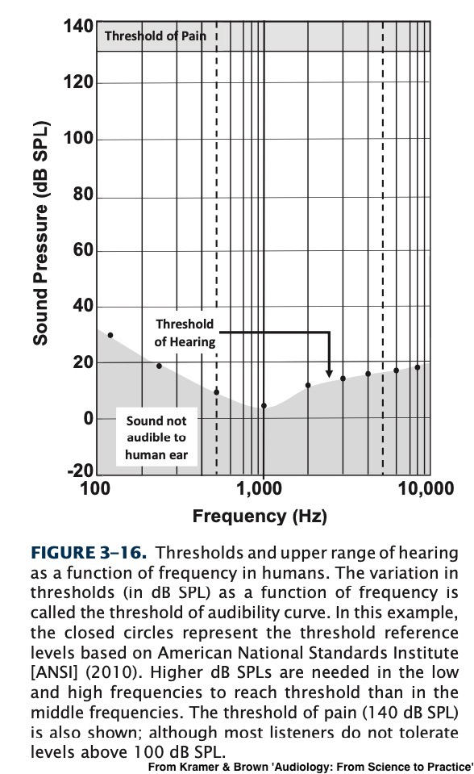
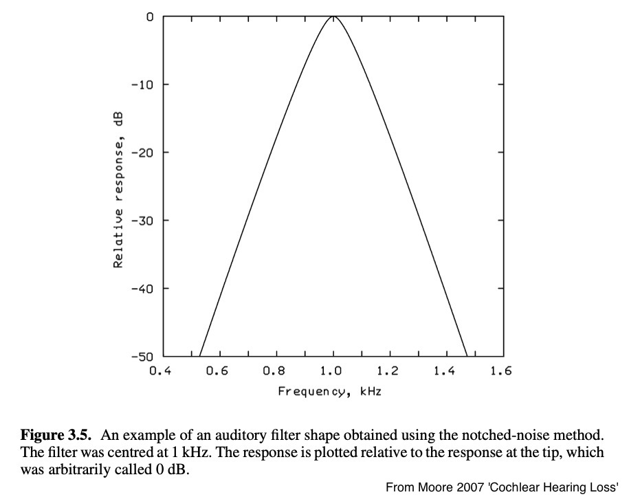
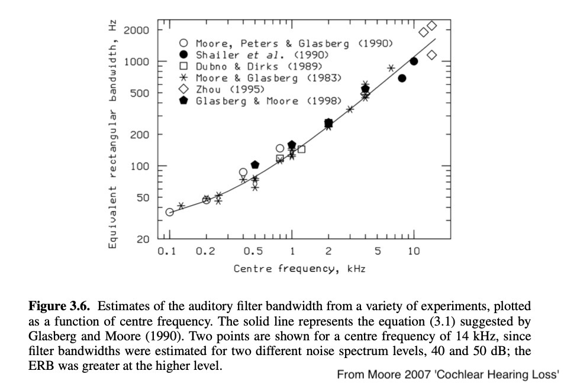
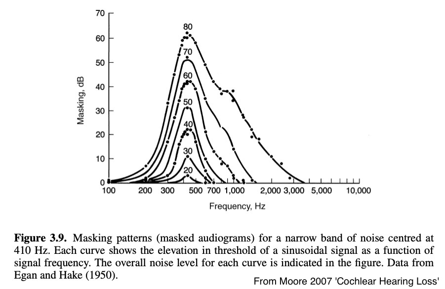
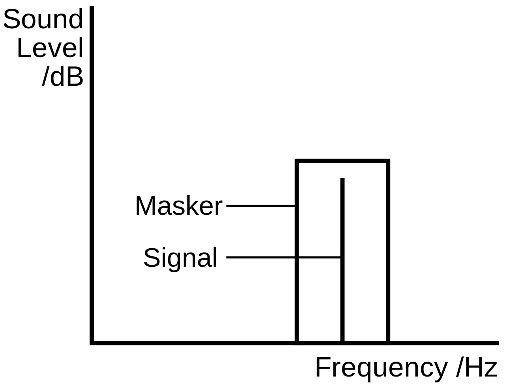
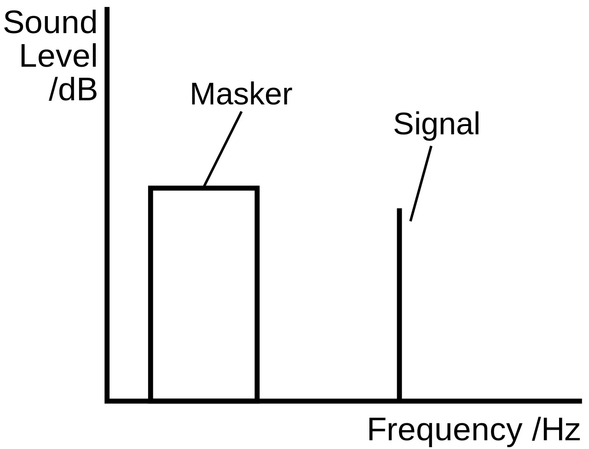

### Give mid-quarter feedback at https://savethevowels.org/feedback --- # Psychoacoustics and Masking ### Will Styler - LIGN 113 --- ### Today's Plan - Psychoacoustics - Human perceptual limits - Psychoacoustic Masking --- ## Psychoacoustics --- ### Psychoacoustics is the science of Sound Perception - *Not* the same thing as the study of hearing - Hearing is physiological, psychoacoustics is behavioral - "What is the difference between the physical sound and its perception?" --- ### There are many subareas of psychoacoustics - Perceptual Limits and limens - Masking Effects - Perception of Loudness and Pitch - Sound Localization - Musical Psychology - Applied Psychoacoustics --- ### Perceptual Limits and Limens - "What are the frequencies and amplitudes which humans can detect?" - "What are the *changes* in frequency and amplitude that humans can detect?" - More on this today and next time --- ### Masking Effects - Can some sounds block out or 'mask' others? --- ### Perception of Loudness and Pitch - How does perceived loudness differ from physical loudness? - How does perceived pitch differ from physical pitch? - **Are humans linearly and 'accurately' perceiving amplitude and frequency?** - *This is next time!* --- ### Sound Localization - How do humans detect the relative positioning of sound sources in space? - How accurate are we at localizing sounds? - Are we able to do this equally in all areas around us? - *This is next time!* --- ### Musical Psychoacoustics - How do we perceive different notes (tones) and combination to tones? - What are the interactions between sounds and changes in body state? - Which sounds produce which physiological responses? - What sounds produce what emotional responses (e.g "too loud" or "annoying" or "pleasant"? - What are the differences in the sound perception of musicians and non-musicians? - *We're not going to cover this!* --- ### Applied Psychoacoustics - How can we make products, buildings, or games sound in a certain way? - "How should this new motorcycle sound?" - "What kind of alarms will be most noticeable and alarming?" - "How can we give a sense of 3D space to somebody wearing headphones?" - "What are the acoustical correlates of 'quality'?" --- --- ### Alas, we're going to have to drop that too - ... but it'll land with a nice, pleasant, solid thump --- ### Psychoacoustics could be its own class - ... and it is! - [Music 175: Psychoacoustics](http://musicweb.ucsd.edu/~trsmyth/intro175/intro175.html) at UCSD! - We're just going to skim the surface --- ## Perceptual Limits and Limens --- ### What sounds can humans actually hear? - In terms of amplitude? - In terms of frequency? - In terms of differences? - We'll cover differences next time! --- ### What's the upper end of the perceptual amplitude range? - On the high end, it's a question of damage - Eardrums burst around 150dB, but we'd keep hearing - We are likely to actually die at around 185 dB SPL - So... that? --- ### What's the lower end of the perceptual amplitude range? - We covered this already! - 0 dB HL! ---  --- ### Perceptual amplitude ranges vary! - This is what's being measured in an audiogram - *It's super diagnostic!* - More on this next week --- ### What's the upper end of the perceptual frequency range? - Around 20,000 Hz - There is little evidence of any perception higher than this - No, audiophiles. Not yours. - For most adults, this is lower - Usually around 15-17kHz --- ### The boomers have weaponized this - ['The Mosquito'](https://www.movingsoundtech.com/) is an active acoustic denial-of-area weapon - Emits ~17.4 kHz at 108dB maximum - Presented without distance measurements, ugh. - [Often deployed to discourage teenagers from visiting or loitering](https://www.npr.org/2019/07/10/739908153/can-you-hear-it-sonic-devices-play-high-pitched-noises-to-repel-teens) - Presents serious problems ethically --- ### What's the lower end of the perceptual frequency range? - 20 Hz is the 'general answer', and is accurate for day-to-day life - Anything below is called 'infrasound' - ... but is 20 Hz really the limit? --- ### Hearing 'infrasound' - In extremely quiet lab conditions, humans can detect sounds lower than 20 Hz - "For example, measurements of hearing threshold have been made down to 4Hz for exposure in an acoustic chamber (Watanabe and Møller, 1990) and down to 1.5 Hz for earphone listening (Yeowart et al., 1967)." - Leventhall, G. (2007). What is infrasound? _Progress in Biophysics and Molecular Biology_, _93_(1), 130–137. [https://doi.org/10.1016/j.pbiomolbio.2006.07.006](https://doi.org/10.1016/j.pbiomolbio.2006.07.006) - Below 20 Hz, the required amplitudes go up quickly! - Median thresholds at 16 Hz are 88 dB for young people, rising to 96 dB at 10 hZ - ... but we don't even need to hear it --- ### What's the frequency range we can *feel*? - Vibrotactile perception of sound is a thing - Skin has the ability to detect vibration - [Hairy skin is more effective at lower frequencies](https://journals.physiology.org/doi/full/10.1152/jn.00483.2005#:~:text=At%20higher%20frequencies%20(more%20than,1968).) - We are able to detect sound from ~5 Hz to ~1000 Hz *without any hearing at all* --- ### Infrasound can be a problem - Low frequency pressure variation can still destroy structures - ... and there's likely some perception of it in exceptional environmental noise - But there's also a lot of crazy - "OMG infrasound from wind farms!" --- ### So technically... - We top out around 20,000 Hz when young - Around 15,000-17,000 Hz when older - We can hear sounds down to around 20 Hz in daily life - ... and feel sounds lower than that --- ### What about differences in frequency and amplitude? - We'll do that next time! - But for now, I'm going to mask our discussion of that --- ## Psychoacoustic Masking --- ### Sound Masking Intuitions - Imagine you've got a purring kitten in your lap - ... and then your roommate starts playing the trumpet - Will it be easier, harder, or the same to hear the kitten? --- ### Sounds can 'block' your hearing of one another - Not physically - This is different from phase cancellation - Louder sounds masking quieter ones - Similar frequency sounds blocking each other - Sounds played sequentially blocking perception --- ## Auditory Filters --- ### Auditory Filtering - We can think of the ear has having a series of overlapping band-pass filters - Each point on the basilar membrane reacts to specific frequencies - ... and the OHCs are tuned to different frequencies too! - We hear sounds with the 'best filter' for that sound --- <img class="r-stretch" src="hearing/basilar_tonotopic.jpg"> --- ### Auditory Filters  --- ### Frequencies within a filter's 'bandwidth' seem like one sound to us - If you play two sounds separated by more than a bandwidth, we hear two sounds - If we play two sounds within the same bandwidth, we hear one sound - This is known as the **critical bandwidth** --- ### Filters get wider as frequencies go up  --- ### Filters get wider as amplitudes go up  --- ### Two sounds within a single *critical bandwidth* are perceived as one sound! - ... and this gives rise to ... --- ## Simultaneous Masking --- ### Simultaneous Masking - When a sound is blocked from perception by a second co-temporal noise --- ### On-Frequency Masking  --- ### Off-Frequency Masking  --- ### Greater off-frequency masking occurs at greater amplitudes --- ### "... but what about when the sounds aren't simultaneous?" - Good question! That's... --- ## Temporal Masking --- ### Temporal Masking - Auditory masking associated with non-simultaneous stimuli - Playing one tone after the other results in some masking - ... and this masking is sharper in frequency than simultaneous masking --- ### Two kinds of temporal masking - Backward masking (stimulus-before-masker) - Forward masking (masker-before-stimulus) - The effect decays exponentially with time --- ### Why? > One is a reduction in sensitivity of recently stimulated neurones; the neurones stimulated by the masker may be ‘fatigued’, and this reduces the response to a signal that comes just after the masker (Meddis and O’Mard, 2005). A second possible mechanism is based on a persistence in the pattern of neural activity evoked by the masker at some level above the auditory nerve. The response to the masker may take some time to decay when the masker is turned off (Plomp, 1964b). (From Moore 2007) --- ### "Is this why the audiologist plays noise into the other ear?" - Not quite! That's... --- ## Contralateral Masking --- ### Audiologists will sometimes examine simultaneous and temporal masking patterns - They can provide good details about the nature of the cochlear amplifier --- ### ... but audiologists have one big problem when trying to measure response in *just one ear* - We have two ears - ... and humans can't 'shut the other one off' --- ### In a perfect world... - We would present signal to just one ear - We could go as loud or quiet as we'd like, and the other ear would provide no help --- ### We live in a vastly imperfect world <img class="r-stretch" src="hearing/aud_supraaural.jpg"> --- ### Interaural Attenuation - The amount of sound attenuation from one ear to the other - **Different headphones and methods have different IA values!** --- ### High IA (~55 dB) <img class="r-stretch" src="hearing/aud_insertearphones.jpg"> --- ### Moderate IA (~40 dB) <img class="r-stretch" src="hearing/aud_supraaural.jpg"> --- ### No IA (~0 dB) <img class="r-stretch" src="hearing/aud_boneconduction.jpg"> --- ### Audiologists use contralateral masking to account for that - Play noise in the other ear to prevent it from 'helping' the ear under examination - Simultaneous masking prevents the other ear from detecting the tone! - *This is a whole chapter in your book (Chapter 9), but we don't have time!* - But this is a great use of masking! --- ## Why do we care? --- ### 1) This is another way that hearing is non-linear - Masking blocks us from hearing some sounds - Masking varies with frequency and amplitude - Masking affects binaural hearing --- ### 2) Masking shows the presence of auditory filters! - It can give good diagnostic information about hearing - This gets directly at OHC frequency specificity --- ### 3) Masking can help block tinnitus - Playing white noise to simultaneously mask the tinnitus - There are specific devices that can do this - This reduces the psychological effect more than the hearing effect --- ### 4) Masking is an important part of music compression! - The mp3 standard uses auditory masking to decide what sounds to keep - "Hmm, they probably can't hear this detail anyways, no need to save it!" - Exploits both simultaneous and temporal masking - [Here's a great article on how MP3 works](https://arstechnica.com/features/2007/10/the-audiofile-understanding-mp3-compression/) --- ### Wrapping up - Psychoacoustics is fascinating - We can hear roughly 20 - 20,000 Hz, modulo age - Our auditory filters display some 'critical bandwidth' effects - Simultaneous masking shows us these filters - Temporal masking is even cooler! - Contralateral masking is useful in audiology - ... and masking is always interesting! --- <huge>Thank you!</huge>